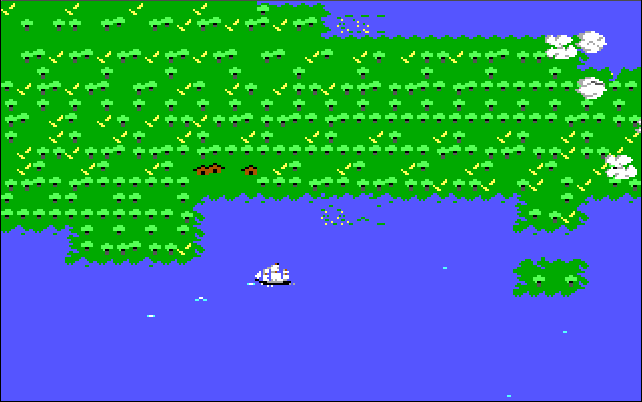
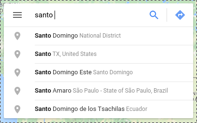
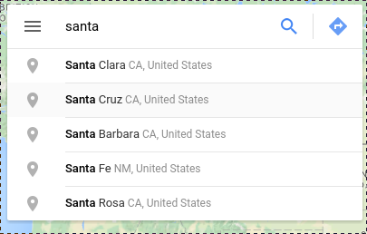

When Languages Meet
@brandon_rhodes
2016 February 20
PyCaribbean — Santo Domingo
1915
Grundgedanken der allgemeinen
Relativitätstheorie und Anwendung
dieser Theorie in der Astronomie
— Albert Einstein


2016 February 11
Observation of Gravitational Waves
from a Binary Black Hole Merger
“On September 14, 2015 at 09:50:45 UTC
the two detectors … simultaneously
observed a transient gravitational-
wave signal.”
“I was responsible for producing
all of the plots in one of the … papers,
and we used Python and Matplotlib
for all of those.”
“I try to use it wherever possible”
https://losc.ligo.org/software/
“This page provides
a number of example scripts
for working with LIGO
data using Python”
wow
How old is Python?
“On February 20, 1991, I
first released Python to the world
in the alt.sources newsgroup”
Python 0.9.0
>>> '{} years ago'.format(2016 - 1991)
'25 years ago'
Today
- Apple
- Dropbox
- Mozilla
- Science
- Education
- Journalism
- Data science
- Finance
How did Python get here?

North America
Spanish arrived first
Harvard
Harvard, 1636
Calculus, 1687

Pyramids, 2700 BC
Woolly mammoths, extinct ~2000 BC
1620, Plymouth Colony
1620, Plymouth Colony
1610, Santa Fe
Spanish → ← English
El Camino Road
El Camino Road
Rio Grande River
El Camino Road
Rio Grande River
Laguna Lake
Bruhella → Bree-Hill



Santa Barbara = Saint Barbara
Santa Barbara = Saint Barbara
Santa Clara = Saint Claire
Santa Barbara = Saint Barbara
Santa Clara = Saint Claire
Santa Cruz = Saint Cruise
Santa Barbara = Saint Barbara
Santa Clara = Saint Claire
Santa Cruz = Saint Cruise
Santa Fe = Saint Faye
Santa Barbara = Saint Barbara
Santa Clara = Saint Claire
Santa Cruz ≠ Saint Cruise
Santa Fe ≠ Saint Faye
La Villa Real
de la Santa Fe
de San Francisco
de Asís
Latin → ← Old Saxon
god, yule, holy
Santo Domingo → Saint Dominic
libro santo → holy book
Lexical
The Grand Cañon of the Colorado
— John Muir (1902)
I have come here to see
the Grand Cañon of Arizona
— Theodore Roosevelt (1903)
There is reserved and
withdrawn from settlement, occupancy,
or disposal … under the name of the
“Grand Canyon National Park”
(Feb. 26, 1919, ch. 44, §1, 40 Stat. 1175.)
þat is enouȝ
þat is enouȝ
that is enough
ASCII
>>> b = '\n'.join(
... ''.join(chr(j) for j in range(i, i+32))
... for i in range(32, 128, 32)
... )
>>> print b.decode('ascii')
!"#$%&'()*+,-./0123456789:;<=>?
@ABCDEFGHIJKLMNOPQRSTUVWXYZ[\]^_
`abcdefghijklmnopqrstuvwxyz{|}~
>>> bytes_32_to_255 = '\n'.join(
... ''.join(chr(j) for j in range(i, i+32))
... for i in range(32, 256, 32)
... )
bytes_32_to_255.decode('latin1')
!"#$%&'()*+,-./0123456789:;<=>?
@ABCDEFGHIJKLMNOPQRSTUVWXYZ[\]^_
`abcdefghijklmnopqrstuvwxyz{|}~
¡¢£¤¥¦§¨©ª«¬®¯°±²³´µ¶·¸¹º»¼½¾¿
ÀÁÂÃÄÅÆÇÈÉÊËÌÍÎÏÐÑÒÓÔÕÖ×ØÙÚÛÜÝÞß
àáâãäåæçèéêëìíîïðñòóôõö÷øùúûüýþÿ
bytes_32_to_255.decode('greek8', 'replace')
!"#$%&'()*+,-./0123456789:;<=>?
@ABCDEFGHIJKLMNOPQRSTUVWXYZ[\]^_
`abcdefghijklmnopqrstuvwxyz{|}~
‘’£€₯¦§¨©ͺ«¬�―°±²³΄΅Ά·ΈΉΊ»Ό½ΎΏ
ΐΑΒΓΔΕΖΗΘΙΚΛΜΝΞΟΠΡ�ΣΤΥΦΧΨΩΪΫάέήί
ΰαβγδεζηθικλμνξοπρςστυφχψωϊϋόύώ�
>>> email = u'cañon'.encode('latin1')
>>> print email.decode('greek8')
caΓ±on
symbol → number → bytes
Old days
We disagreed on how to turn symbols
into numbers (Latin-1? Greek-8?)
but agreed on how to turn
numbers into bytes (8-bit bytes)
Unicode
We now agree on how to
turn symbols into numbers
but disagree on how to turn
those numbers into bytes
(UTF-32? UTF-16? UTF-8?)
?
cañon → canyon
C
↘
sh ↘
Python 1.0
ABC ↗
↗
Modula-3
The world is
adopting Python
The world is
adopting Python
“Finally!”
The world is
adopting Python
“Finally!”
?
sorted(set(user.surname for user in users))
C
↘
sh ↘
Python 1.0
ABC ↗
↗
Modula-3
sorted(set(user.name for user in users))
names = {}
for user in users:
names[user.surname] = None
names = names.keys()
names.sort()
Haskell Dylan
comprehensions MRO with!
↘ ↘ ↓
Python 2.0 2.2 2.3 2.4 2.5 …
↗ ↗
generators annotations
Icon Java
sorted(set(user.name for user in users))
cut -d" " -f1 users.txt | uniq | sort
The truth
I chose a good-enough language
The truth
I chose a good-enough language
that became world-class
when languages meet
'Hi, %s, you have %d messages.' % (name, n)
'Hi, {}, you have {} messages.'.format(name, n)
'The time is {:%H:%M}.'.format(datetime.now())
[u for u in users if u.age > 21]
filter(lambda u: u.age > 21, users)
[name.upper() for name in names]
map(str.upper, names)
'Without music, life would be a mistake'
"Without music, life would be a mistake"
Trailing comma!
rivers = [
'Yaque del Norte',
'Yaque del Sur'
]
↓
rivers = [
'Yaque del Norte',
'Yaque del Sur'
'Yuna River'
]
rivers = [
'Yaque del Norte',
'Yaque del Sur',
]
↓
rivers = [
'Yaque del Norte',
'Yaque del Sur',
'Yuna River',
]
Indentation
with open('data.csv') as f:
lines = list(f)
if not lines:
return
count = len(lines)
3 superpowers
- Callables
- Exceptions
- Type system
Callables
new Integer(3.0); int(3.0)
(int) height; int(height)
method('/'); method('/')
Exceptions
In the days before
exceptions, you had to check
the return code of every operation
int r = printf("Hello, world!");
if (r == -1) {
return NULL;
}
With exceptions you can write
code without constant if checks,
and let outer code handle errors
def f():
print "Hello, world!"
try:
f()
except IOError:
…
Dynamic language
coupled to a
Strong type system
Traditional scripting languages
had loose type systems
$ awk 'END {print 30 + "40"}'
70
$ perl -e 'print 30 + "40"'
70
js> '30' + 40
'3040'
js> '30' - 40
-10
>>> '30' + 40
Traceback (most recent call last):
...
TypeError: cannot concatenate 'str'
and 'int' objects
Finally
Python always aims
for readability
>>> import this
Q:
Why Python?
Why today?
A:
If you program all the time,
you will eventually become productive
even in a poorly designed language
For professional programmers,
a simple language is a luxury
But today the programming world
is welcoming the scientist, the
educator, the student
People who have other things
to do with their time than
learn complicated syntax
For the occasional programmer
who has other things to get done,
simplicity is not optional
For the occasional programmer
who has other things to get done,
simplicity is not optional
It’s survival
For the occasional programmer
who has other things to get done,
simplicity is not optional
It’s survival
They need a language like Python
Thank you!
@brandon_rhodes